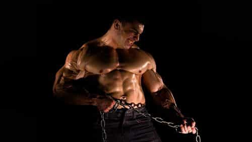

David is a strength coach and bestselling Men's Health author. You can follow him at HowToBeast.com.


I was born alone and I will die alone. I’ve got to do what’s right for me and not live my life the way anybody else wants it.
– Curtis Jackson
If life were a board game, you’d be the game piece.
In reality, life isn’t much different from a game. There isn’t a defined end goal, however. You get to choose it. It could be power and respect. It could simply be happiness. Or it could be more specific: money or women, for example. Whatever it is, you choose.
In a board game there are strict limitations. In life, we’re encouraged to follow laws and social norms, but for the most part we’re free to do as we choose. There are infinite paths that will take you to any goal imaginable.
Along the way you’ll deal with many people. Some will help you, others won’t. You can grow to depend on the ones that help you, but that always incurs a risk. A family member can die. A close friend can betray you. Your girl can leave you. How will you react when one of these things happens?
Playing with others is a necessary part of the game. But never depend on them. Doing so will ultimately lead to failure and disappointment.
Accept that the only two things you can ever count on are your body and your mind– your game piece. You must tend to these things like a gardener tends to his plants. Focus on improving them and facilitating their health and growth and you’ll always put yourself in the best position to win.
If some tragedy befalls a dependent man, he may sink into depression. He might feel like he’s lost all hope of accomplishing his mission in life. He might give up.
A truly independant man, however, will not. He’s prepared, on some level, for each of these tragedies. He doesn’t have a specific game plan for when his best friend betrays him, per se. But he’s put himself in a good position, both physically and mentally, that he can weather the storm. Not only can he weather the storm, but he can keep his cool and make the fine adjustments needed to get the ship back on course.
Below I’ll offer the basic tasks one must do to protect his game piece, and see it thrive.

If you take care of your body, it will be strong and healthy. It will also help foster a potent mind. Yes, there’s always the rare risk of contracting some form of cancer or another deadly disease, but if you follow the steps below, you all but rule these things out.
1. Eat good food
I won’t go into specifics, because everyone’s diet will, and should, be different.
But if you focus your diet around meat, fruits, and vegetables your body will flourish. Meat provides the protein and amino acids your body needs to grow. The fruits and vegetables provide the fiber and vitamins you need to function over the long run. A man with a solid diet will respond better to stress, and therefore be more self reliant.
2. Lift weights
In short, lifting weights develops a strong nervous, muscular, and skeletal system. These are the three main systems that run your body. An efficient body is like a strong ship– it will weather the storm better and be far more dependable in your journey.
The most brutally simple and effective lifting program is StrongLifts 5×5. It focuses on building strength across the five most basic movements humans are meant to do (squat, deadlift, bench press, row, and overhead press).
You must also foster a capable mind. One that can stand on it’s own two feet. The strongest body won’t accomplish anything without an equally impressive mind.
1. Read books
Reading a book is like absorbing another man’s lifelong wisdom. The more books you read, the more you’ll know and the wiser you’ll be. Blogs are okay, but the average quality of a blog post is decidedly lower than what you find in a book. People simply put more time, effort, and value into books.
The knowledge you acquire in books also contributes to your self reliance. It offers quality wisdom and advice– that can’t be taken away from you.
2. Meditate
Meditation is the act of being comfortable being alone. When you meditate, you remove all of the outside noise. All of the thoughts, gossip, music, news, women, men, business, sex– everything. You are left with only yourself.
Many men can’t stand meditation because they’ve grown dependant on all of this external stimulation. They aren’t comfortable in their own skin. And thus they’ve lost their edge, their self reliance.
You have your body and your mind. Nothing else is guaranteed. You’re born with only that, and you’ll die just the same. You’re best off fostering their growth above all other pursuits.
Check out my new #1 Amazon Bestseller, The Book of Alpha. It’s full of direct, actionable advice for the man who wants to better himself.
Read More: Don’t Look For A Girlfriend